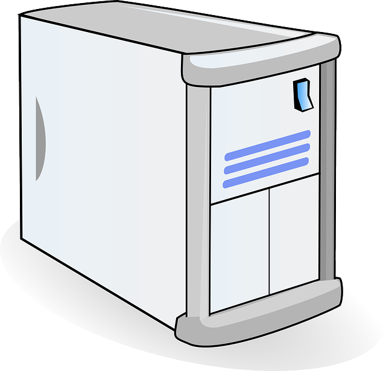

Chassi eller datorchassi är datorns kropp, den består oftast av stansad och
återvunne blandmetall vi har alla dator komponenter i den som t.ex Moderkort,
grafikkortet, ram minne osv. Det finns olika typer av datorchassi, Om du vill
ha en dator som kan hantera nya spel så behöver du ha en chassi med bra
ventilation så att komponenterna inte blir för varmt men det kommer låta
mer. Vi behöver imte ha en chassi med bra ventilation om man ska arbeta med den.
Om du vill ha en speldator behöver chassi cokså klara av olika typer av t.ex
moderkort eller hårddisk. Man kallar chassi för mini, midi eller full-tower.
Mini-tower används oftast för arbeta, midi används för både spel, youtube och arbeta
och Full-tower används oftast som en speldator för att den använder bättre
komponenter som t.ex moderkort eller grafikkortet. Därför måste du bestämma dig
i förvägs innan du väljer en chassi.